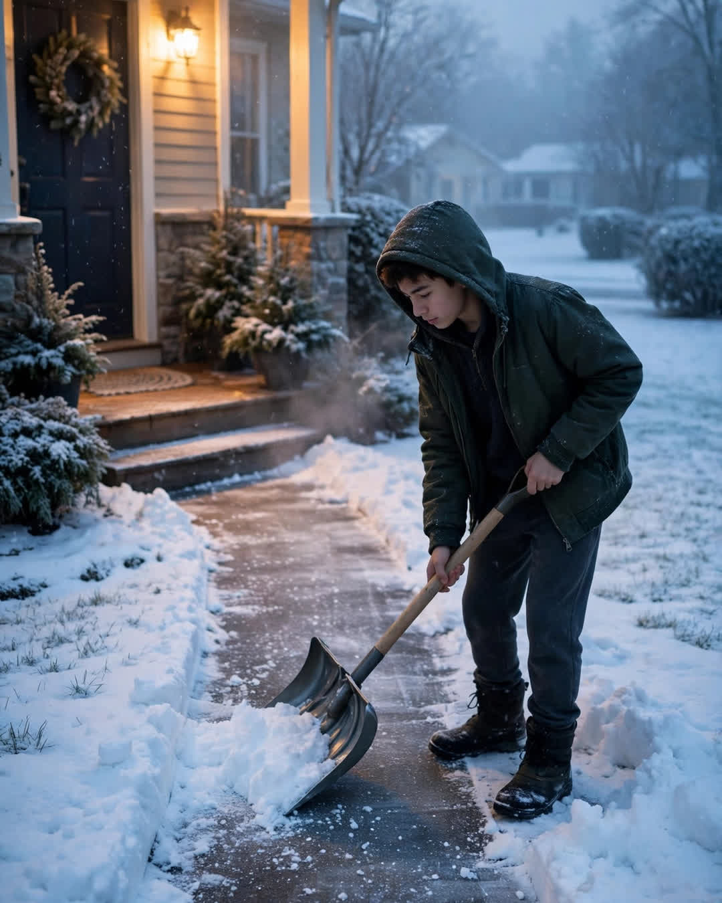

The Snow Shovel
A Clipp Kaili original story

The winter my wife died, someone shoveled my driveway every single morning, and I never once saw who it was.
Elena passed in November. By December, the snow was coming hard off the lake, the kind that buries a mailbox and turns a driveway into a wall. I was sixty-eight, my knees were shot, and most mornings I just stood at the window with coffee I did not drink, looking at a driveway I did not have the heart to clear.
Then I would blink, and it would be done. Clean edges. Salt on the walk. My newspaper moved up onto the porch where the melt would not soak it.
I asked around. The Millers said it was not them. Pastor James said the church youth group had not started yet. For two months, that mystery was the only thing that got me out of bed before nine. I wanted to thank somebody. I needed to thank somebody. Grief makes you desperate to prove the world is not as empty as your house feels.
In late February, I set my alarm for five and waited in the dark kitchen, lights off, like a man hunting a ghost.
At 5:40, a figure came up my drive with a shovel over one shoulder. Hood up. Moving fast and quiet. When he hit the porch light, I saw the face.
It was Tyler.
Tyler Benson, seventeen, from two doors down. The same Tyler I had called the police on three summers before, when his garage music shook my windows until midnight and I was still the kind of man who thought a complaint was the same as a conversation. An officer had gone to his door. His mother had cried on their porch. We had not spoken since. When Elena was alive, she had told me I handled it wrong. She was right about most things I handled wrong.
I opened my front door in my slippers, standing in the snow in February.
Tyler froze with the shovel mid-air. "Mr. Carter, I — the forecast said six more inches. I was trying to be done before you woke up."
"How long?" I asked.
"Since the first storm, sir."
"Why?"
He looked down at his boots for a long time. Then he said the sentence that split me open.
"Because Mrs. Carter used to leave cookies on our porch after the police thing. She wrote a note. She said you were having a hard year and I should not take it to heart. She said good neighbors forgive before they are asked."
I had not known about the cookies. I had not known about the note.
Of course I hadn't.
I stood there in the snow in my slippers and cried like a child, and a seventeen-year-old boy I had once reported held his shovel and waited, patient as a priest, until I could speak again.
That morning, I made two mugs of coffee and we cleared the rest of the street together, his shovel and my old one, side by side. He has a key to my garage now. Sometimes his music drifts down the block on summer nights, a little loud.
I leave my window open.
Forgiveness does not always knock. Some mornings, it just clears your driveway and asks for nothing.
This story is a work of fiction, written to touch hearts and bring families closer.
← Back to all stories